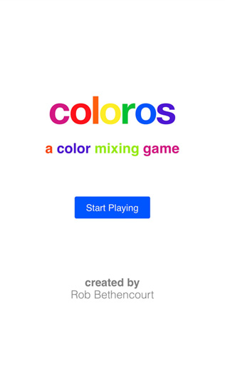
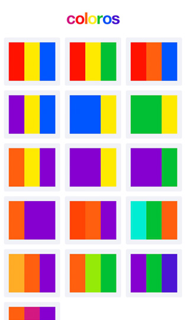
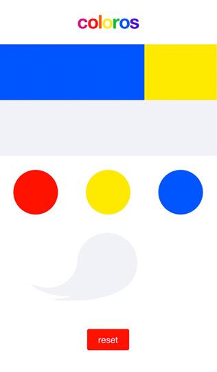
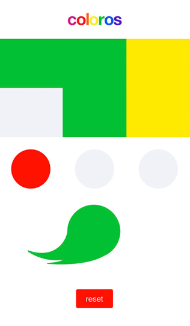

Logo
A simple logo that displays the colors used in the game. A mix of primary, secondary and tertiary colors.
Inspiration
I wanted to make an original game using the elm programming language. I also wanted to make something my daughter could interact and have fun with. I brainstormed a number of puzzle game ideas, but all were too big in scope. Color mixing provided me with a basic game mechanic that I could keep to a handlful of levels.
Primary, Secondary, Tertiary and Brown
Each level starts with the three primary colors of red, yellow and Blue. From these three colors you can create secondary and tertiary colors to solve each puzzle in the game. Keeping it to just these colors kept the number of outcomes manageable as the game would only have 12 possible colors outcomes. I used brown as the default when a player mixes colors that don't create colors on the color wheel. I remember as a kid, and from watching my daughter paint, that eventually many toddler paintings go brown. As a bit of comedic nostalgia brown lets the player know they've made a mixing error.
The Puzzles
I wanted Coloros to be a game that could be finished in 15 to 20 minutes and have two important game mechanics that once learned could be applied to all the puzzles. These two are that the brush always keeps the color that was just mixed, and that the same color can be applied to multiple artboards. Level 2 in the game teaches the player that different colors can be applied to the same artboard. The player applies yellow to an artboard and then applies blue to create green and solve the puzzle.
The first real challenge comes on level 6 where green needs to be used twice to solve the puzzle, but is not a primary color the game starts the player out with. On level 5, after a few levels of solving puzzles through color mixing, I made a very simmple puzzle that requires no color mixing in order to reinforce the mechanic that the most recently applied color stays on the brush by having the player apply blue to two consecutive artobards. On level 6 green has to be mixed first and then applied twice, but many players get stuck using yellow twice and then blue on the first yellow and assume blue is still on the brush and apply green to yellow, resulting in the tertiary color yellow-green. Once players realize they need to create green, and then apply it to the other artboard, as opposed to mixing yellow with blue twice, the rest of the game provides similar puzzles with more complexity.
Elm is Fun
This is the second game I've made with the elm programming language. Elm is a joy to work with. And as this is a personal project I wanted to use a language I'd have fun with. I could list all the reasons why elm is great, but that's been done so many times already. I'm just want to say that it's just so much fun to use!